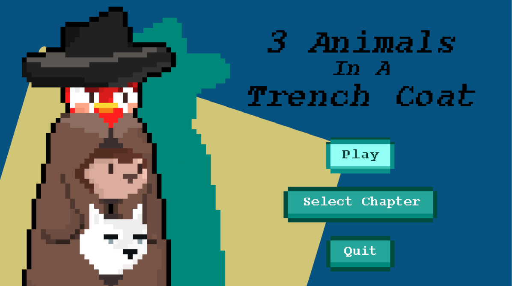
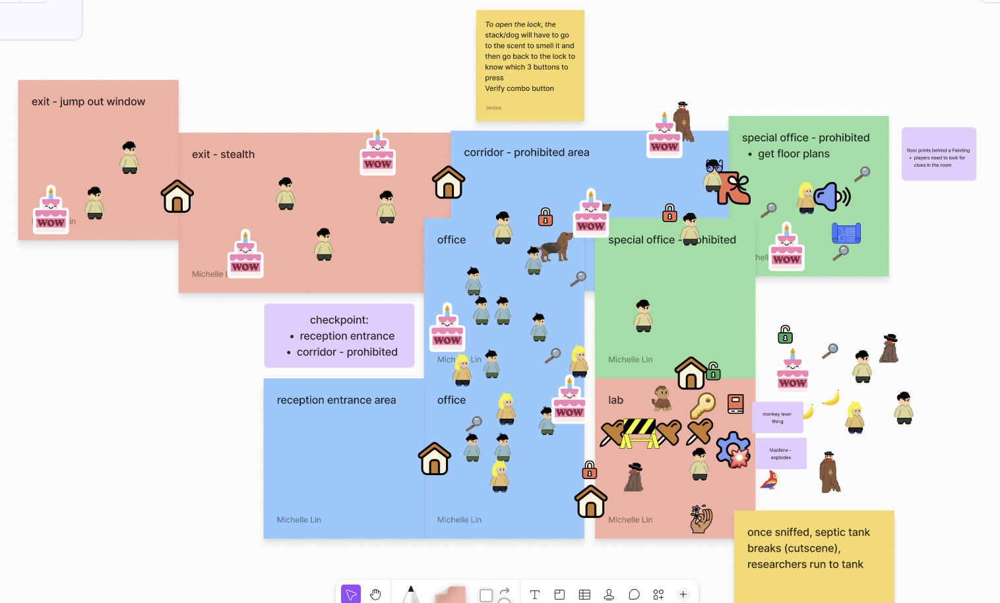
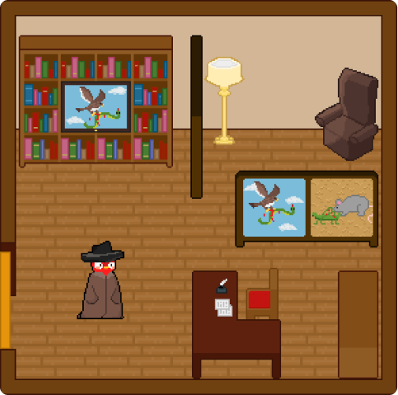
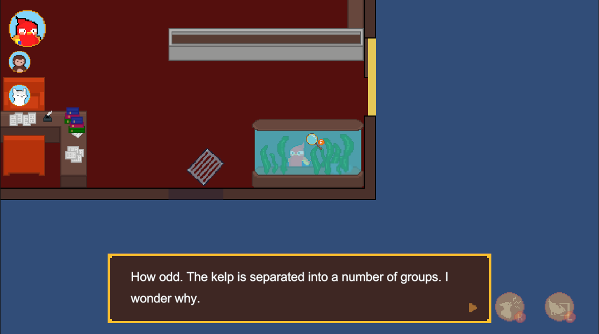
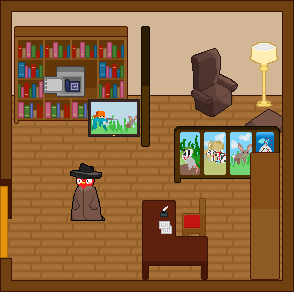

A top-down 2D puzzle adventure game with stealth elements. The player plays as three animals (parrot, monkey, dog), stacked on top of each other in a trench coat, who accidentally joins a spy organization. They must solve puzzles while hiding their identities.
Play the game↗ or check out the walkthrough!↗

14 weeks [January - April 2024]
The goal of this project was to design and create an experimental game focused on creating distinctive scenarios through use of narrative and game mechanics. My focus was to create unique scenarios that could only be solved through the use of these mechanics. I designed puzzles, map layouts, and illustrated the background art for the game.
The main mechanic of the game is that the player controls 3 animals stacked on top of each other with the ability to split one animal away from the stack to solve puzzles. During ideation, we collaborated in a FigJam file using sticky notes and get a feel for the general layout of the map.

In the environmental design, I focused on ensuring that players knew where to go, what was interactable, and what the points of interests were. This was important as many of our puzzle clues were either embedded into the environment or required the player to investigate specific areas in the map. the tank is investigated for a clue relating to the kelp in the tank.
To do this, I made points of interests “pop out” of the environment more through the use of bright colours or through placing interesting objects, like the desk with papers.


We conducted playtesting sessions where we received several critiques that one the puzzles was too difficult and that it was hard to see the details of its visual hint. To solve this, I changed the imagery in the divider and painting so its larger and contains a clearer connection to the textual hint. The shelf in the room was lowered so the player can see the entire divider. The given text hint was "The divider depicts the struggles between predator and prey. The owner of this office sure has interesting taste in decor."

The text hints were based on predator-prey relationships but the text hint on the divider didn’t relate to its image very well. The addition of “the images seem to depict a predator prey relationship” was added to connect the text and image, and hint to the player that the safe’s password referred to predator and prey instead of relying on pure imagery.
This project was a great learning experience as it was the first time designing a game. Through working on this project, I’ve improved my skills in level design and environmental art. As this was the first time I’ve created environments, I’ve learned more about the process of designing intuitive levels.
I’ve learned the importance of playtesting throughout each stage of the project. With each session, I am able to make modifications earlier, preventing the problem of having to create larger changes down the line. Also, I’ve improved my level design skills through iterative testing, identifying areas of concern and finding ways to resolve them.
In the future, I would incorporate more narrative elements into the background as it mostly contains necessary devices to proceed through the game. Adding more life into the maps would help deliver background information as well as increase player engagement.